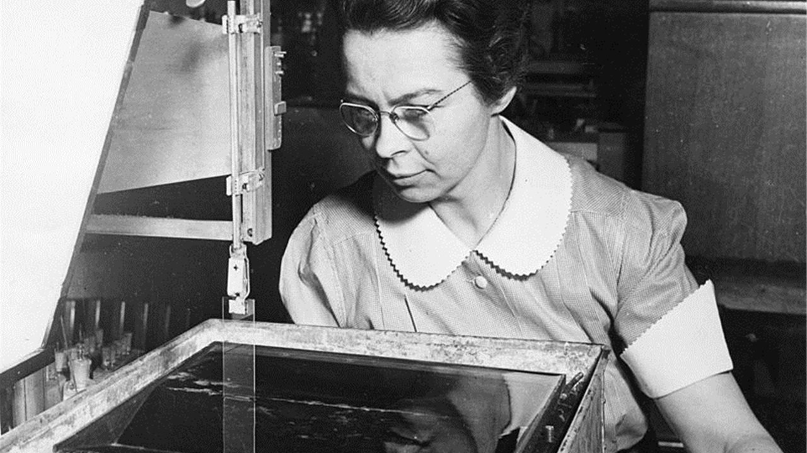

Historia
Desde la piedra tallada hasta la inteligencia artificial, la historia de la tecnología es un relato fascinante de cómo la inventiva humana ha transformado nuestro mundo.
Ver más

La historia de la tecnología es un relato fascinante que se remonta a los albores de la humanidad. Desde las primeras herramientas de piedra tallada hasta los sofisticados dispositivos electrónicos de hoy en día, los avances tecnológicos han transformado nuestra forma de vivir, trabajar y comunicarnos.
En este sitio web, te embarcarás en un recorrido cronológico por las distintas eras de la innovación, explorando los hitos clave que han dado forma a nuestro mundo. Descubrirás cómo los inventos y descubrimientos han impulsado el progreso humano, desde la Revolución Industrial hasta la Era Digital.
A lo largo del camino, conocerás a las mentes brillantes detrás de estas innovaciones, comprenderás el impacto social y cultural de la tecnología y reflexionarás sobre el futuro que nos depara.
Desde la piedra tallada hasta la inteligencia artificial, la historia de la tecnología es un relato fascinante de cómo la inventiva humana ha transformado nuestro mundo.
Ver más